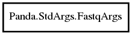

FastqArgs
Object Hierarchy:

Description:
The standard argument handler for a pair of FASTQ files from Illumina.
Namespace: Panda.StdArgs
Package: pandaseq-2
Content:
Constants:
Creation methods:
Methods:
-
public bool tweak (char flag, string argument)
Process the command line arguments for the FASTQ argument handler.
-
public NextSeq? opener (LogProxy logger, out FailAlign? fail)
Initialise the sequence stream for the FASTQ argument handler.
-
public bool setup (Assembler assembler)
Do additional assembly setup for the FASTQ argument handler.